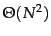

An excellent general review of clustering is (Jain et al., 1999). Early references for specific HAC algorithms are (King, 1967) (single-link), (Sneath and Sokal, 1973) (complete-link, GAAC) and (Lance and Williams, 1967) (discussing a large variety of hierarchical clustering algorithms). The single-link algorithm in Figure 17.9 is similar to Kruskal's algorithm for constructing a minimum spanning tree. A graph-theoretical proof of the correctness of Kruskal's algorithm (which is analogous to the proof in Section 17.5 ) is provided by Cormen et al. (1990, Theorem 23.1). See Exercise 17.10 for the connection between minimum spanning trees and single-link clusterings.
It is often claimed that hierarchical clustering algorithms produce better clusterings than flat algorithms (Jain and Dubes (1988, p. 140), Cutting et al. (1992), Larsen and Aone (1999)) although more recently there have been experimental results suggesting the opposite (Zhao and Karypis, 2002). Even without a consensus on average behavior, there is no doubt that results of EM and  -means are highly variable since they will often converge to a local optimum of poor quality. The HAC algorithms we have presented here are deterministic and thus more predictable.
-means are highly variable since they will often converge to a local optimum of poor quality. The HAC algorithms we have presented here are deterministic and thus more predictable.
The complexity of complete-link, group-average and centroid clustering is sometimes given as  (Day and Edelsbrunner, 1984, Murtagh, 1983, Voorhees, 1985b) because a document similarity computation is an order of magnitude more expensive than a simple comparison, the main operation executed in the merging steps after the similarity matrix has been computed.
The centroid algorithm described here is due to Voorhees (1985b). Voorhees recommends complete-link and centroid clustering over single-link for a retrieval application. The Buckshot algorithm was originally published by Cutting et al. (1993). Allan et al. (1998) apply single-link clustering to first story detection .
An important HAC technique not discussed here is Ward's method (El-Hamdouchi and Willett, 1986, Ward Jr., 1963), also called minimum variance clustering . In each step, it selects the merge with the smallest RSS (Chapter 16 , page 191 ). The merge criterion in Ward's method (a function of all individual distances from the centroid) is closely related to the merge criterion in GAAC (a function of all individual similarities to the centroid).
Despite its importance for making the results of clustering useful, comparatively little work has been done on labeling clusters. Popescul and Ungar (2000) obtain good results with a combination of  and collection frequency of a term. Glover et al. (2002b) use information gain for labeling clusters of web pages. Stein and zu Eissen's approach is ontology-based (2004). The more complex problem of labeling nodes in a hierarchy (which requires distinguishing more general labels for parents from more specific labels for children) is tackled by Glover et al. (2002a) and Treeratpituk and Callan (2006). Some clustering algorithms attempt to find a set of labels first and then build (often overlapping) clusters around the labels, thereby avoiding the problem of labeling altogether (Osinski and Weiss, 2005, Zamir and Etzioni, 1999, Käki, 2005). We know of no comprehensive study that compares the quality of such ``label-based'' clustering to the clustering algorithms discussed in this chapter and in Chapter 16 . In principle, work on multi-document summarization (McKeown and Radev, 1995) is also applicable to cluster labeling, but multi-document summaries are usually longer than the short text fragments needed when labeling clusters (cf. snippets). Presenting clusters in a way that users can understand is a UI problem. We recommend reading (Baeza-Yates and Ribeiro-Neto, 1999, ch. 10) for an introduction to user interfaces in IR.
and collection frequency of a term. Glover et al. (2002b) use information gain for labeling clusters of web pages. Stein and zu Eissen's approach is ontology-based (2004). The more complex problem of labeling nodes in a hierarchy (which requires distinguishing more general labels for parents from more specific labels for children) is tackled by Glover et al. (2002a) and Treeratpituk and Callan (2006). Some clustering algorithms attempt to find a set of labels first and then build (often overlapping) clusters around the labels, thereby avoiding the problem of labeling altogether (Osinski and Weiss, 2005, Zamir and Etzioni, 1999, Käki, 2005). We know of no comprehensive study that compares the quality of such ``label-based'' clustering to the clustering algorithms discussed in this chapter and in Chapter 16 . In principle, work on multi-document summarization (McKeown and Radev, 1995) is also applicable to cluster labeling, but multi-document summaries are usually longer than the short text fragments needed when labeling clusters (cf. snippets). Presenting clusters in a way that users can understand is a UI problem. We recommend reading (Baeza-Yates and Ribeiro-Neto, 1999, ch. 10) for an introduction to user interfaces in IR.
An example of an efficient divisive algorithm is bisecting  -means (Steinbach et al., 2000). Spectral clustering algorithms (Kannan et al., 2000, Dhillon, 2001, Zha et al., 2001, Ng et al., 2001a), including principal direction divisive partitioning (PDDP) (whose bisecting decisions are based on SVD , see Chapter 18 ) (Boley, 1998, Savaresi and Boley, 2004), are computationally more expensive than bisecting
-means (Steinbach et al., 2000). Spectral clustering algorithms (Kannan et al., 2000, Dhillon, 2001, Zha et al., 2001, Ng et al., 2001a), including principal direction divisive partitioning (PDDP) (whose bisecting decisions are based on SVD , see Chapter 18 ) (Boley, 1998, Savaresi and Boley, 2004), are computationally more expensive than bisecting  -means, but have the advantage of being deterministic.
-means, but have the advantage of being deterministic.
Unlike  -means and EM, most hierarchical clustering algorithms do not have a probabilistic interpretation. Model-based hierarchical clustering (Kamvar et al., 2002, Vaithyanathan and Dom, 2000, Castro et al., 2004) is an exception.
-means and EM, most hierarchical clustering algorithms do not have a probabilistic interpretation. Model-based hierarchical clustering (Kamvar et al., 2002, Vaithyanathan and Dom, 2000, Castro et al., 2004) is an exception.
The evaluation methodology described in Section 16.3 (page 16.3 ) is also applicable to hierarchical clustering. Specialized evaluation measures for hierarchies are discussed by Fowlkes and Mallows (1983), Larsen and Aone (1999) and Sahoo et al. (2006).
The R environment (R Development Core Team, 2005) offers good support for hierarchical clustering. The R function hclust implements single-link, complete-link, group-average, and centroid clustering; and Ward's method. Another option provided is median clustering which represents each cluster by its medoid (cf. k-medoids in Chapter 16 , page 16.4 ). Support for clustering vectors in high-dimensional spaces is provided by the software package CLUTO (http://glaros.dtc.umn.edu/gkhome/views/cluto).